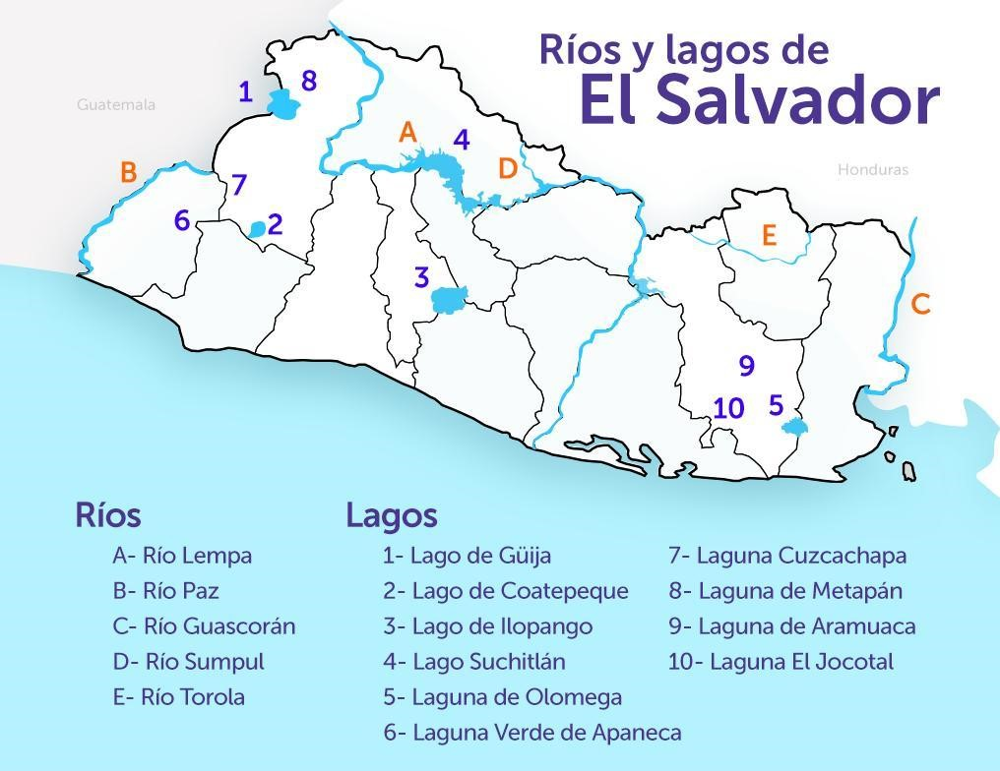

El Salvador cuenta con un grupo reducido de lagos en los cuales el turismo se pone de manifiesto ya que cuentan como un atractivo natural donde es posible combinar la magia del paisaje ecoturístico con la diversión y la cultura que se encuentra en cada lugar.
Como dato curioso, el lago más grande de El Salvador es el lago Suchitlán, con una superficie de 135 kilómetros cuadrados, el cual se ubica en la zona norte de El Salvador; este lago se formó de manera artificial en la década de los 70s sobre el recorrido del río Lempa, como parte de la construcción de una central hidroeléctrica.